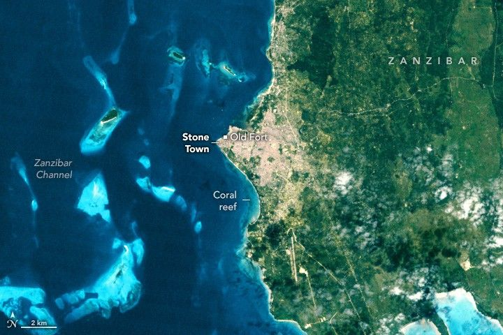

Digging Into the History of Stone Town
Merging archaeological evidence indicates that Swahili people have lived along a coral peninsula on the western coast of the island of Zanzibar since at least the 11th century, hundreds of years earlier than previously thought. A natural harbor west of Stone Town (Mji Kongwe in Swahili), the oldest part of modern Zanzibar City, likely attracted people to the area, providing shelter to fishermen and easy access to the African mainland for traders.
Many of the historic buildings in Stone Town, preserved today as part of a UNESCO World Heritage site, were built in later centuries from coral ragstone and limestone, likely sourced from the fringing coral reefs north and south of the city. In the pair of Landsat images above, coral reefs remain visible off the shore of the fast-growing city. The TM (Thematic Mapper) on Landsat 5 captured the image (left) in 1995; the second image (right) was captured by the OLI (Operational Land Imager) on Landsat 8 in 2024.
The Portuguese Empire was the first European power to reach Stone Town and Zanzibar, taking control of the island in the early 16th century. Construction of the foundation of the city’s oldest building, Old Fort (also called Ngome Kongwe), began under the Portuguese, though the fortress didn’t take its modern form until the Sultanate of Oman took control of the island in the 17th century.
Under Omani rule and with the influence of the British Empire, Stone Town became a hub of maritime trade, particularly of ivory, spices, and enslaved people. It was during this period, especially in the 18th and 19th centuries, that many of Stone Town’s major buildings—including cathedrals, a ceremonial palace, and a large mosque—were built, creating an architectural tapestry UNESCO describes as a “complex fusion of Swahili, Indian, Arab, and European influences.”
By 1890, the British had taken control of the island, designating it a protectorate. Revolution in 1964 led to Zanzibar’s union with Tanganyika and the formation of Tanzania as a modern state. Since the mid-1990s, the city’s population and economy have boomed, growing from 223,000 in 1995 to 874,000 in 2025, a change accompanied by economic growth of several percent per year. Tourism, construction, and agriculture have helped fuel the growth in recent years, economic data indicate.
Signs of urbanization and land cover change stand out in the satellite images, with newly developed built-up areas replacing coastal forests and other vegetation to the north, east, and south of the city. According to one analysis of Landsat imagery, built-up areas have increased in and around the city from 2,650 hectares (6,550 acres) in 1995 to 11,407 hectares (28,187 acres) in 2024, accompanied by a 26 percent decrease in vegetation.
As the city grows, researchers are using remote sensing to learn more about the city’s history. University of Arkansas archaeologist Wolfgang Alders developed new techniques using observations from Landsat and other satellite platforms to pinpoint rural areas around Zanzibar that were ripe for archaeological excavation but threatened by rapid urbanization.
After using the technique, subsequent field surveys identified 53 new archaeological sites in a 15-kilometer (9-mile) radius around Stone Town, Alders reported in the Journal of Field Archaeology in 2024. The discovery of the new archaeological sites is helping scientists understand the settlement patterns and lifestyles of the area’s early inhabitants.